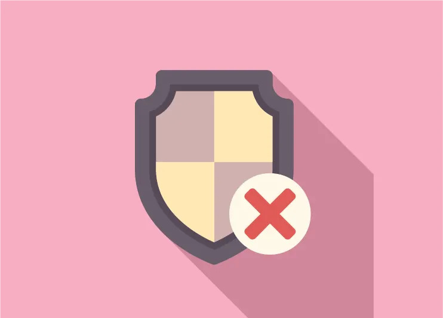
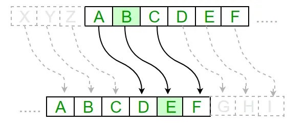

|  | ||
| I cifrari a blocchi attualmente in uso e più famosi sono 3DES, IDEA A e AES. | Lo scambio di chiavi di Diffie-Hellman. | Anche la crittografia moderna include degli algoritmi simmetrici, chiamati cifrari a blocchi. |
|
3DES:
Suddiviso il messaggio è di 64 bit come ogni blocco DES, ma la chiave è lunga il triplo, cioè 192 bit. AES (Advanced Encryp- tion Standard): La dimensione del blocco del messaggio è di 128 bit e su ciascuno di essi vengono applicate funzioni che lavorano con 128, 192 o 256 bit. Inoltre ciascuna funzione viene iterata 10, 12 e da 14 volte in base alla lunghezza della chiave. IDEA (International Data Encryption Algorithm): È utilizzato in software di sicurezza per la posta elettronica. Questo algoritmo lavora iterativamente con blocchi da 64 bit e una chiave da 128 bit. |
La soluzione al problema dello scambio delle chiavi, una sfida nella crittografia,
è stata fornita dai crittografi statunitensi Whitfield Diffie e Martin Hellman con lo sviluppo del protocollo crittografico Diffie-Hellman. Questo protocollo, pubblicato nel 1976, permette a due parti di stabilire una chiave segreta condivisa tramite un canale di comunicazione pubblico, senza la necessità di scambiare chiavi private in anticipo. Se p è un numero primo, un generatore di p è un numero minore di p che elevato alle sue potenze naturali e calcolato in modulo p, genera tutti i numeri compresi tra 1 e p - 1. |
Il cifrario a blocchi accetta in input un blocco di n bit e restituisce
in output altri n bit secondo una corrispondenza concordata tra mittente e destinatario. La corrispondenza tra blocchi di bit in input e blocchi di bit in output è la chiave del cifrario. La tabella delle corrispondenze è la chiave privata condivisa da mittente e destinatario Per molti anni l'algoritmo di cifratura a blocchi più utilizzato è stato il DES, sviluppato nel 1976 per il governo degli Stati Uniti. Per utilizzare questo algoritmo si deve suddividere il messaggio in chiaro in blocchi da 64 bit e applicare delle funzioni che utilizzano una chiave di 56 bit, iterando il processo per 16 volte. |
| Cifrario di Cesare. | ||
|  | ||
|
I cifrari di Cesare e di trasposizione sono esempi di cifrari simmetrici,
ovvero usano la stessa chiave per cifrare e decifrare, ma garantiscono solo due aspetti della sicurezza: la segretezza del messaggio (Alice lo trasforma e Bob lo recupera con la chiave) e l'autenticazione (se la chiave è stata scambiata di persona). Manca però la garanzia sull'integrità del messaggio, ciò significa che non si può sapere se è stato modificato da un attaccante. |
Per maggiori informazioni vedi Sicurezza e Tipologie di Virus